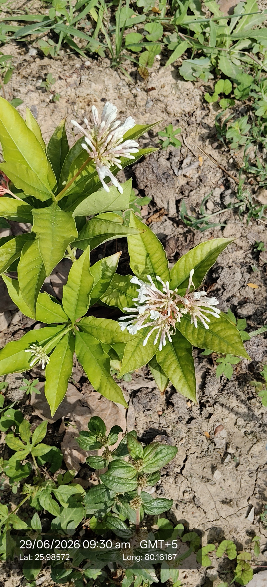

Visual record01 photographs

| Scientific name | Rauvolfia serpentina |
|---|---|
| Family | Apocynaceae |
| Type | Perennial shrub. |
| Category | Shrubs |
Habitat & Growing Conditions
- Moist, shady areas in tropical Asia; native to India.
- Glossy green leaves in whorls, small white/pink flowers, long roots.
Economic Importance
- Famous in Ayurveda and Unani medicine.
- Roots used for high blood pressure treatment.
- Contains reserpine alkaloid, vital in modern pharmaceuticals.
- Traditionally used for insomnia, anxiety, and mental disorders.
- Known as a remedy for snake bites.
- Cultivated as a medicinal cash crop.
- Plays a role in global hypertension drugs.
- Important in traditional healing practices.
- Flowers and leaves sometimes used in folk remedies.
- Economically valuable due to demand in herbal and modern medicine.
Medicinal Importance
Medicinal notes pending.